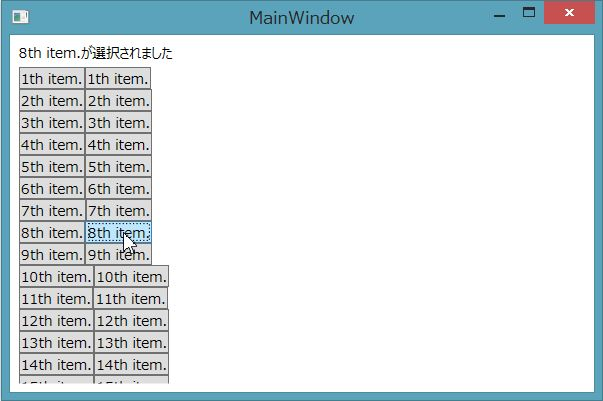

Windows Presentation Foundationを使ったアプリケーション(Windows Presentation Foundationを例にしていますがSilverlight, Windows Phone, Windows store appでも同様なことが可能です。一部機能についてはWindows Presentation Foundationの固有機能を使っています）のDataTemplate内で、自分のDataContext以外のものをソースに指定してBindingを行う方法のサンプルプログラムについて紹介します。
サンプルをダウンロードしてVisual Studio 2012で開いてください。プロジェクトを開いて実行するとボタンが横に2列に並んで20行表示されます。ボタンを押すと、画面上部のテキストの表示が変わります。

サンプルプログラムでは、MainWindow内でItemsControlにListItemというクラスのコレクションをバインドしています。ItemsControlの1行1行はMainWindow内のResourcesに作成したDataTemplateで見た目を定義しています。DataTemplateは、StackPanelを使ってButtonを横に2つ並べています。このDataTemplateのボタンでMainWindowのDataContextに設定しているMainWindowViewModelのインスタンスのCommandをバインドしています。
ポイントとなるXAMLのコードを以下に示します。
まず、MainWindow内でのViewModelのインスタンスの定義とDataContextへの設定を行っているコードを以下に示します。
<Window.Resources>
<local:MainWindowViewModel x:Key="viewModel" />
...省略...
</Window.Resources>
<Window.DataContext>
<StaticResourceExtension ResourceKey="viewModel" />
</Window.DataContext>
<Window.Resources> <local:MainWindowViewModel x:Key="viewModel" /> ...省略... </Window.Resources> <Window.DataContext> <StaticResourceExtension ResourceKey="viewModel" /> </Window.DataContext>
<!-- StaticResourceで参照する方法 -->
<Button Content="{Binding Text}"
Command="{Binding ViewModelCommand, Source={StaticResource viewModel}}"
CommandParameter="{Binding}"/>
<!-- StaticResourceで参照する方法 --> <Button Content="{Binding Text}" Command="{Binding ViewModelCommand, Source={StaticResource viewModel}}" CommandParameter="{Binding}"/>
<!-- RelativeSourceで参照する方法 -->
<Button Content="{Binding Text}"
Command="{Binding DataContext.ViewModelCommand, RelativeSource={RelativeSource AncestorType=ItemsControl}}"
CommandParameter="{Binding}"/>
<!-- RelativeSourceで参照する方法 --> <Button Content="{Binding Text}" Command="{Binding DataContext.ViewModelCommand, RelativeSource={RelativeSource AncestorType=ItemsControl}}" CommandParameter="{Binding}"/>